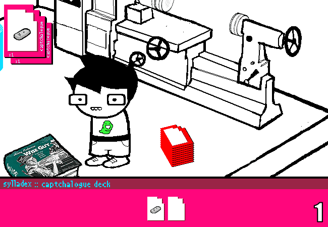
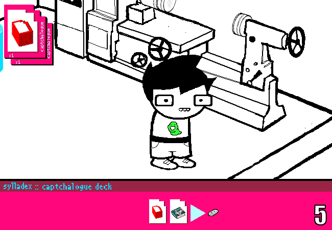
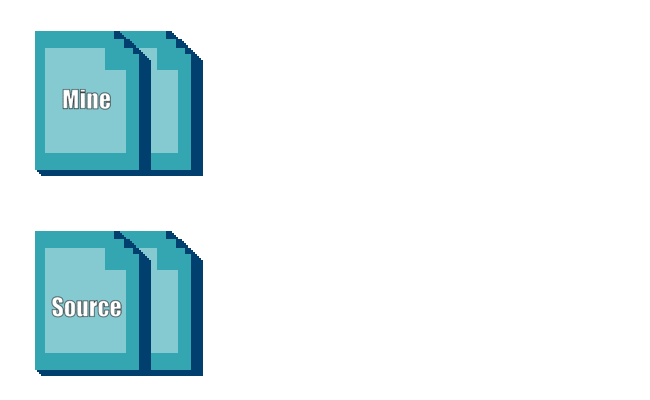

Hey, My name is Boogs and today I'm going to methodically break down the animation of Page 627 of Homestuck,
> John: Collect Cards.
This is one of the finest captchalogue animations in the comic, simply for doing so much so right with so many limitations being firmly imposed over it.
I’m going to break down every frame of this animation, usually in small chunks, slowed down and trimmed using the genuinely excellent tool of ezgif.com. I can label frames by order, make them fade into each other, and lots of other useful stuff.
To start, here’s the panel with all motion frames changed to take 0.1s instead of 0.05s.
If you didn’t understand that sentence, you should read this article first. I went over basic terminology there.
Now for specifics.
Here’s the very first action of the panel:
Frames 1-3 are a simple teleport, with Egbert going from the first frame (A one-second long static) into the book’s position on frame 3, which is a half-second long hold.
To bridge them, frame 2 applies tickback to both the PDA inside the sylladex, that has moved positions, and the book inside the captcha card on the top, to draw attention to them moving.
This trick is then done again for frames 4 and 5, picking up the pile of cards, but the hold on frame 5 is just 0.1s long, leading into a sliding motion up to frame 9 now that the PDA has been ejected.
Switching into “stanced legs” position only to spring back into better posture on frame 9 is a really good touch here.
Having all of these layers and parts separated makes animating more body parts really simple, and stuff like these little extra movements for the head and face really adds extra polish into animations.
Next, we have the book flying out of the sylladex, an excellent portion:
On frame 10, the PDA appears in the front of the captcha deck,
Then on frame 11, the 2nd card juts out, and next, the book is seen ejected from it.
Then, making for a total of 11 motion frames, the book is flying, landing and shaking the ground (a.k.a. Every non-UI layer in the document).
The only thing done to sell the book’s movements is having it spin 180 degrees on every other frame, done with a copy of the layer.
If you’re having trouble animating a spinning object because of all your layers being left behind, link your spun copies together, animate a single one of them initially, and only before you’re done, go and switch the layer visibility to sell the rotation.
Lastly, Egbert teleports onto the book, picks it up, and the cards cascade, each with a violent tickback into position...
But that effect is still rendered hard to spot, since, with all the same distance applied onto every card on every frame, it just looks like the distanced-card is being pushed.
However, the effect pays off on the final frame, and all things considered, looks good as a result.
If I wanted to sell the individual tickbacks of the card appearing, I’d apply the tickback not on the first frame they appear, but on the 2nd: that would make a flowing wave pushing the cards forward. Here’s a simple mockup, with the original panel’s concept to compare.
Final thing I have to say about this really good panel is that I think some minor tickback could’ve been applied to Egbert as well after teleports, just to properly sell them as motions. It’d also clash less with the sliding motion in the middle of the GIF.
This is a great panel showing how really simple repeated tricks can help selling the feeling of a lot happening really well. All of these techniques can be employed super easily on their own onto pages, and that’s why it’s such a good panel to study.